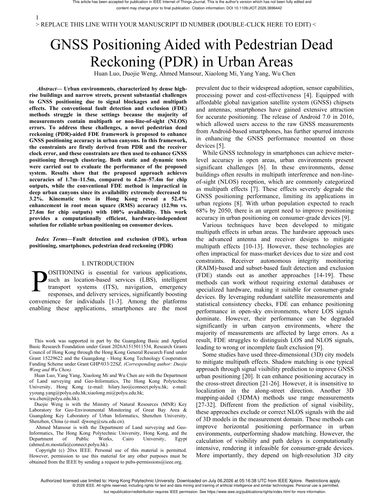

GNSS Positioning Aided with Pedestrian Dead Reckoning (PDR) in Urban Areas
Paper preview

Research story and quick reading guide
This paper addresses the difficulty of pedestrian GNSS positioning in urban areas. In open-sky environments, GNSS can provide useful absolute positioning, but dense cities introduce multipath, non-line-of-sight signals, and frequent satellite blockage. These errors can be large and difficult to detect using GNSS observations alone. PDR, on the other hand, can provide relative motion information from smartphone inertial sensors, but it drifts over time. The paper explores how PDR can aid GNSS so that the strengths of one source compensate for the weaknesses of the other.
The conceptual chain is GNSS absolute position + PDR relative motion → consistency checking → improved measurement selection → robust pedestrian positioning. This chain is important because it shows that PDR is not only a backup when GNSS fails. It can also help evaluate whether GNSS measurements are plausible. If the GNSS solution or satellite measurements conflict with the motion implied by PDR, the system can identify and reduce the influence of unreliable information.
The paper is valuable for urban positioning because it focuses on realistic pedestrian conditions. In dense streets, a user may move through open areas, narrow streets, semi-covered spaces, and urban corridors. The quality of GNSS changes quickly, and a robust system must adapt. PDR provides continuity across these changes, while GNSS prevents unbounded drift when reliable observations are available. The integration is therefore a practical example of multi-source pedestrian navigation.
For indoor positioning researchers, the paper is also relevant because urban navigation shares several challenges with indoor localization: weak absolute references, strong environmental constraints, sensor drift, and the need for context-aware fusion. The method contributes to the broader theme of using motion constraints to improve positioning reliability under degraded signal conditions.
A simple visual reading is satellites provide global anchors; steps and heading provide local continuity. The system becomes stronger when these two views are checked against each other. GNSS says where the user might be in the global frame; PDR says how the user has moved since the previous state. Their agreement increases trust; their disagreement signals risk.
This paper should be cited when discussing GNSS/PDR integration, urban pedestrian navigation, NLOS and multipath mitigation, PDR-aided GNSS quality control, smartphone-based urban localization, and robust positioning in dense built environments.
Extended summary
This paper uses PDR-derived constraints to improve GNSS fault detection and positioning in challenging urban environments where multipath and NLOS conditions reduce standalone GNSS reliability.
When to cite this paper
- GNSS positioning is integrated with PDR in urban canyons
- fault detection and exclusion is adapted for smartphone navigation
- consumer-device positioning is evaluated under multipath and NLOS effects
- urban pedestrian navigation requires high availability without dedicated hardware
Keywords
GNSS positioningpedestrian dead reckoningurban canyonsmartphone positioningfault detection and exclusionNLOSsensor integration
Official link
https://doi.org/10.1109/JIOT.2026.3696442
For publisher-restricted articles, link to the DOI or an allowed accepted manuscript rather than uploading a restricted PDF.
BibTeX
@article{Luo2026gnss,
title = {GNSS Positioning Aided with Pedestrian Dead Reckoning (PDR) in Urban Areas},
author = {Huan Luo and Duojie Weng and Ahmed Mansour and Xiaolong Mi and Yang Yang and Wu Chen},
year = {2026},
journal = {IEEE Internet of Things Journal},
doi = {10.1109/JIOT.2026.3696442},
}